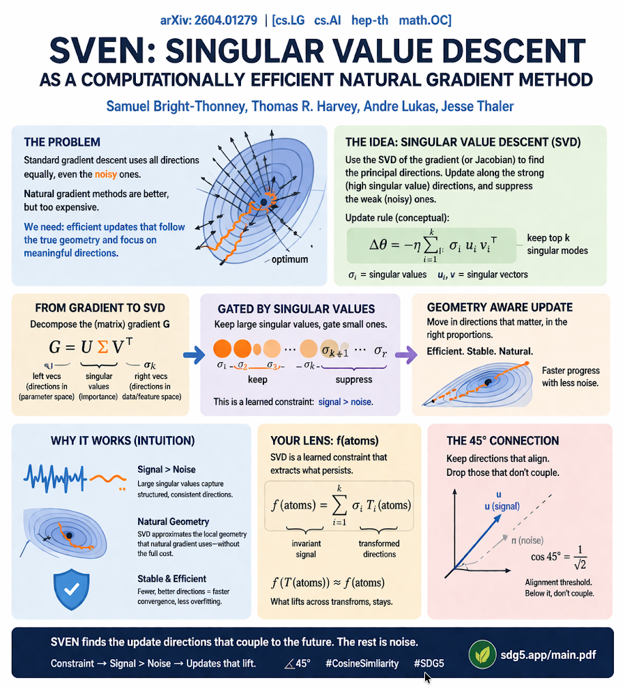

arXiv bridge · ML
SVEN: Singular Value Descent as a Computationally Efficient Natural Gradient Method
arXiv: 2604.01279 · goodmath translation → 9423 phase-lock
why this paper matters
This paper is useful because it asks a practical optimization question: how do we move in directions that matter without spending the full cost of natural gradient methods?
In arXiv vocabulary, the answer uses singular value decomposition of the gradient or Jacobian to keep strong directions and suppress weak ones. In goodmath vocabulary, this is a constrained update rule where signal couples and noise does not.
paper vocabulary
Standard gradient descent updates across all available directions, even when some directions are noisy or poorly aligned with the local geometry. Natural gradient methods improve this by respecting geometry, but they can be expensive.
Singular Value Descent uses the SVD of a gradient-like object to identify principal directions. Large singular values indicate stronger directions, so the method updates along those and gates weaker modes.
goodmath translation
Not every update lifts. Some updates scatter across directions without preserving structure from one step to the next. Those updates exist, but they do not couple to future progress.
SVEN adds a learned constraint: keep directions that persist, suppress directions that wash out. That is why this paper fits goodmath so well. It is not merely descent. It is structured descent.

9423 phase-lock bridge
The bridge from arXiv vocabulary to 9423 phase-lock vocabulary is simple: singular values act like a gate on updates. Strong aligned modes carry structured signal. Weak modes behave like noise.
constraint → signal > noise
f(T(atoms)) ≈ f(atoms)
otherwise: updates exist, don’t couple across steps.
45° 📐 (√(1² + 1²))
In this framing, learning is not just parameter motion. Learning happens where structure remains legible across transforms. That is the point of the phase-lock: what stays aligned can lift forward.
bridging vocabulary
arXiv vocabulary
principal directions
large singular values
geometry-aware update
computational efficiency
goodmath vocabulary
aligned directions
signal > noise
constraint that lifts
coupling without drift
foundation
This page is one local example of the broader goodmath framing in main.pdf: structure matters where constraint preserves readable signal. A paper like this becomes more than an optimization trick when read as a general lesson about selective coupling.
Keep what aligns. Drop what does not couple. That is the shared bridge between the paper’s update rule and 9423 phase-lock language.
9423 phase-lock explanation
9423 phase-lock names a simple reading rule: constrained structure stays readable across transforms. When alignment holds at 45° 📐 (√(1² + 1²)), signal lifts; below that threshold, updates drift as noise.